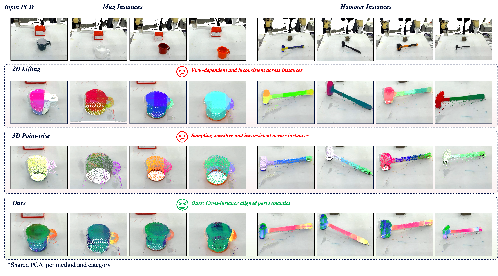
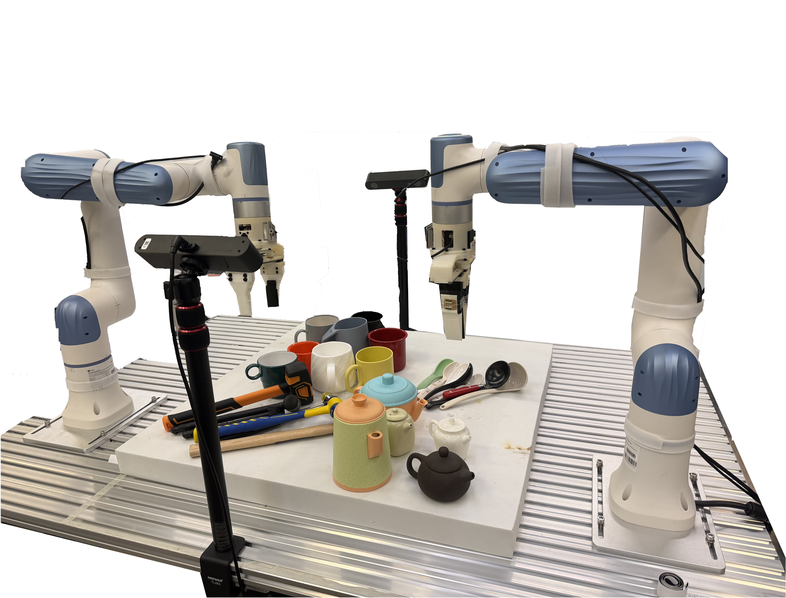

Condition on the Object
Observed support points encode the current object instance and construct a queryable object-level field.
Generalizable robot manipulation requires stable 3D understanding of functional object parts, such as handles, tool heads, openings, and graspable regions. Raw point clouds provide geometry but lack explicit part semantics, and their sampled points vary with viewpoint, sensor configuration, and object instance. Existing 2D feature lifting and discrete 3D point-wise features enrich point clouds with semantics, but the resulting features remain attached to observation-dependent samples. We propose an object-centric continuous semantic field that conditions on an object point cloud and reads part-aware semantic embeddings at explicit 3D query locations. The field is trained from part-annotated object models and then frozen to generate semantic point clouds as object-level conditioning for manipulation policies. Experiments on RoboTwin simulation tasks and real-world bimanual object manipulation show that our representation provides more stable functional-part cues and improves policy performance over raw point-cloud, 2D feature lifting, and 3D point-wise feature baselines.
Move from point-attached semantics to an object-conditioned semantic field that can be queried at controlled 3D locations.

Object conditioning and semantic readout are separated: support points describe the instance, while query locations decide where semantics are evaluated.

Observed support points encode the current object instance and construct a queryable object-level field.
Semantic embeddings are read at controlled 3D coordinates instead of being tied to sensor samples.
Coordinates and embeddings are paired as policy-ready semantic point clouds for manipulation.
Across simulation and real-world evaluations, queryable object-centric semantics improve success on tasks that require functional-part localization.
Cross-instance feature colors are more consistent for corresponding functional parts.

The evaluation spans simulation tasks, real-world held-out object splits, and a bimanual robot platform with calibrated RGB-D sensing.



Representative rollouts from the provided video set, grouped by task.
Mug 0
Mug 1
Mug 3
Mug 6
Hammer 1
Hammer 2
Hammer 5
Hammer 6
Stirring 1
Stirring 3
Stirring 4
Stirring 5
Pour Water
Pour Water 2
Pour Water 3
Pour Water 4
@inproceedings{sun2026beyondpointattached,
title={Beyond Point-Attached Semantics: Object-Centric Semantic Fields for Generalizable Manipulation},
author={Sun, Zheng and Zhang, Lerong and Rouxel, Quentin and Li, Zhihao and Chen, Fei},
booktitle={Proceedings of the 10th Conference on Robot Learning (CoRL)},
year={2026}
}